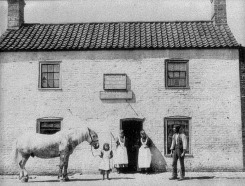
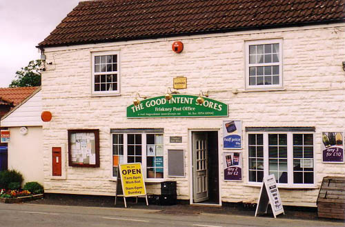

| Follow the above link to the main page for this topic or click the graphic below to visit the Homepage. |
 | Photo Gallery: The Good Intent Stores & Friskney Post Office The Bates Family of Lincolnshire |
| Prior to the turn of the century the present Good Intent Stores & Friskney Post Office, now owned by the Bates Family, was a public house and then a butcher's. Around 1972 the Friskney Post Office was relocated to the former Good Intent Beer House. The building is located on Church Lane in Friskney, Boston, Lincolnshire. Below are two views of the building. The first is a photo from around 1900 and the second is a recent photo (2005) taken by the present owner. Based on some image manipulation of the 1900 photo, the words "brewers", "fine", "malt..", and "ales" can just barely be made out. It seems then that the building served as a public house well past 1860 when George Cullen is known to have owned and operated the Good Intent. |
 View circa 1900 of the building presently occupied by the Good Intent Stores |
 Recent photo (2005) of the Good Intent Stores & Friskney Post Office |